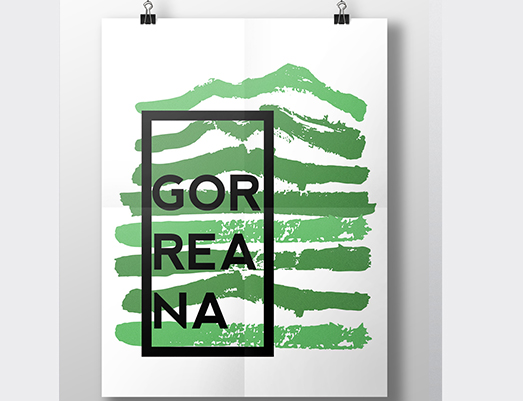

This project was prepared for the class of Design II, the main object was creating an identity for a place. Our choice was a place called Gorreana, on São Miguel island, Azores. This place is unique because it is one of the oldest tea plantations in Europe (1883)
